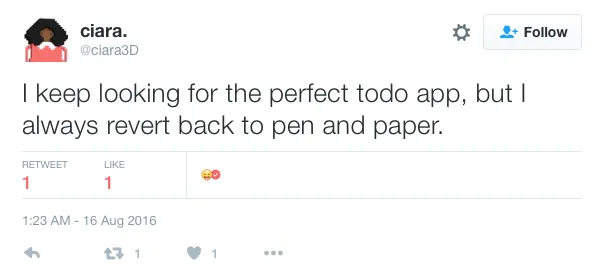
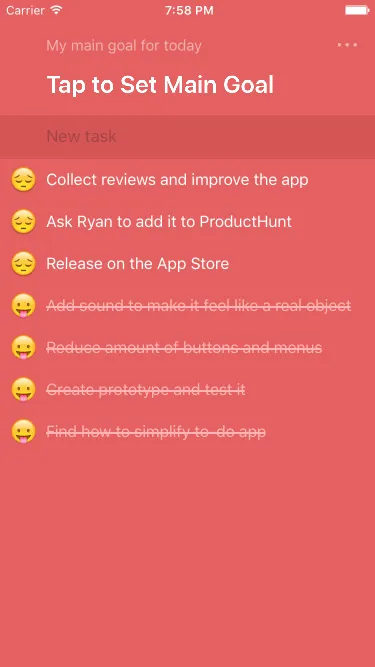
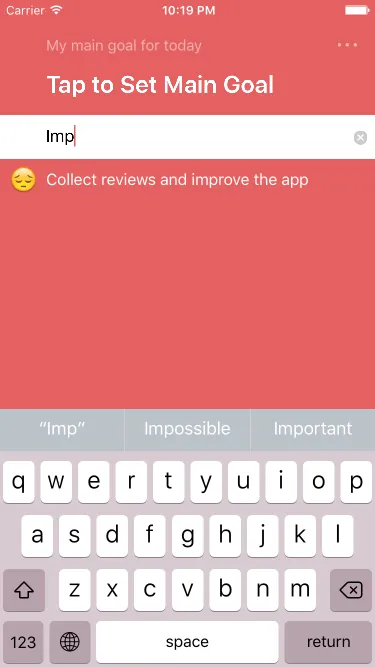
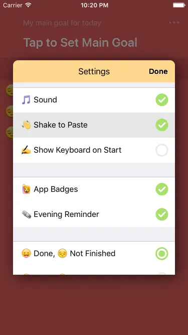
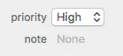
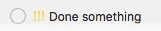
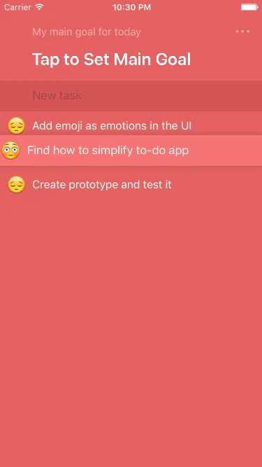
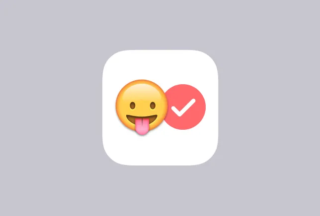

Taskmoji: Simplified To-Do App for People Who Hate To-Do Apps
You probably know that apps can sometimes be harder to use than physical objects. They’re slow, confusing, and require a lot of taps, clicks, and selections.
That’s why, for many people, pen and paper still works better than some fancy app on your iPhone.

Core of the problem
I started digging into the idea of “how can it be so simple, so literally replace pen & paper” and found that there are two main problems with apps:
-
It’s slow. The steps you need to take to add something in an app are dwarfed by the steps you need to take with a piece of paper.
-
Hard to learn. Complexity of apps (menus, popups, lists, hashtags, selections, oh boy). Paper is just a paper, no need to “learn” it. We all do it as kids because it’s so easy.
Ask yourself, why do you need to write something down? The answer is: to remember. You use lists to clear your mind and to be sure that this list can be a handy assistant when you need it.
At the same time, you can’t literally add every step you take to do something, you only need to record important steps or a result you want to achieve.
Because if you have long to-do lists with tasks you need to finish, you will feel even more overwhelmed 😱.
Simplicity of pen & paper inside an app
So I started with restrictions that you agree to follow to keep the app as simple as possible:
-
There is only one list for each personal or professional task. No due dates, no reminders, no folders. Why? Due dates, folders, etc. are additional inputs. If you open the app, try to add something, and realize it’s the wrong folder, you’ll spend time trying to find (or add) the folder.
-
You should only enter short tasks for today (yesterday) that can be done in a few hours.
-
Uncompleted tasks will be moved to tomorrow.
-
Priority can be created by reordering tasks. Drag the most important ones to the top. No need to tap edit, enter hashtags, or tap extra buttons.

To make the app feel more like a real object, I added sounds. When you write something on a piece of paper, you hear it’s sound, when you drop a pencil, you hear it too. Almost everything in the real world has a sound. By adding sounds, I wanted to make the app more friendly.
How does Taskmoji work?
-
In Taskmoji all possible buttons have been removed. When you open the app, you can start writing your tasks, keyboard will be shown automatically (optional).
-
New task input is also a search field. So you can search while typing. If nothing is found, just press return to create a new one. Imagine if a search was separated: you have to tap to search, enter text, if text not found, tap back, tap create new task button, enter it again. The search will match all words in previously entered tasks, not just the first word.

- If you need to copy something in another app and add it as a task, just open Taskmoji and shake the device. Without it, you have to tap “Create new task” button, tap again to show iOS popup menu, tap paste and tap return to create the task, but this is very complex way to do it.

- And the last improvement is priority. Obviously, some tasks in the day should be done immediately, but another can be done later. Some apps provide an additional way to prioritize tasks, in Reminders app:
 
But this requires separate input, ability to remove, edit and add much more complexity to the app. In Taskmoji I used hierarchy techniques from the real world: “at the top is more important than at the bottom”.
In many cultures, the vertical position of an object indicates its importance. King at the top, commoner at the bottom - very common image.
So, instead of adding folders (again: if you open the app and want to add something and realize that it’s a wrong folder, you will spend time to find the folder or add it) I decide to use importance of tasks by their position. Tasks at the top are more important than those at the bottom. Rearrange them by grabbing and dragging:

If you need to differentiate tasks by groups, you can use prefixes. Work tasks can be “WR: do this”, home tasks can be “HM: do that”.
In this app I decide to do an experiment. What if I replace all icons with emoji? Emoji are more emotional symbols than icons. I don’t know how it can affect the feel of the app, but I have to try to find out. So, from the app icon to all the elements that need an icon, I use emoji because it has more emotion by itself.

Taskmoji is available in the App Store. Grab a copy and play with it.